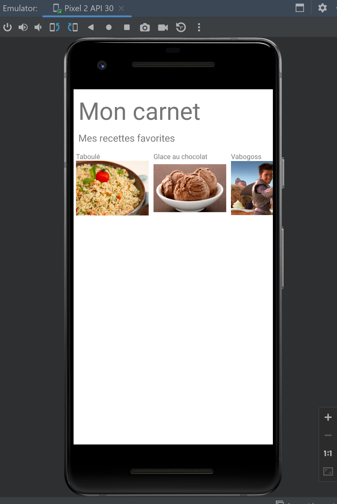

Développement mobile
- mobile
- android studio
- Nathan Gissler
Pour ce MON, je me suis initié au développement mobile.
Cours vidéo
J'ai suivi un cours vidéo qui montre les bases du développement mobile en Java avec Android Studio (en anglais). Le cours est assez accessible aux débutants et assez détaillé (de l'installation au développement à proprement parler, avec une longue partie dédiée à Java, que l'on peut passer si on connaît déjà le langage). La vidéo entière dure 11h30 mais on peut ne regarder que les parties qui nous intéressent.
Application du cours
J'ai passé les quelques dernières heures du MON à commencer le développement le l'application Menu de notre projet Do-It grâce à ce cours.
J'ai notamment pris un peu de temps pour reproduire la RecyclerView qui permet de créer un scroll horizontal contenant plusieurs éléments. Cela m'a paru être l'élément le plus complexe à mettre en place dans la vidéo.

Je pense continuer ce développement en Java lors de mon POK, car nous n'aurons probablement pas le temps de développer l'application autrement qu'en no-code dans le cadre du projet (sur Bubble en l'occurence). Cela me permettra de voir les deux outils en parallèle.